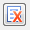

Приём возвратов из торговой точки на склад
Для приёма возвратов из ТТ делаем следующее:
- создаём новый документ прихода и в нём заполняем следующие поля:
- Транзакция. «108 - Возврат из торговой точки»: при выборе данной транзакции в списке ожидаемых приходов - будут отображены только ожидаемые приходы по возвратам.
- Поставщик. Выбрать поставщика «Возврат из торговой точки».
- Ожидаемый. Выбираем ожидаемый приход, при необходимости добавить ещё ожидаемые приходы – делаем это на вкладке логистика.
- Сохраняем введённые данные.
- Нажимаем кнопку «Дополнительные опции», появится список команд – выбираем «Заполнить по ожидаемому». Данную команду можно выбрать только в том случае, если документ прихода пустой, т.е. в нём нет ранее добавленных строк.
- После этого, будут добавлены строки с товарами (синего цвета), согласно ожидаемому приходу. Все строки необходимо поместить в буфер, для этого выделяем их и нажимаем кнопку «Поместить в буфер» 
- Заходим в диспетчер, где уже есть приказ на размещение созданного нами возврата и отправляем этот приказ на терминал.
- Теперь осталось сканировать штрих код ячейки боя, куда необходимо разместить товар и непосредственно сам товар.
- Срок годности проставляется автоматически, и равен дате создания документа (текущей дате), при необходимости можно изменить срок годности, но это ни на что не повлияет.